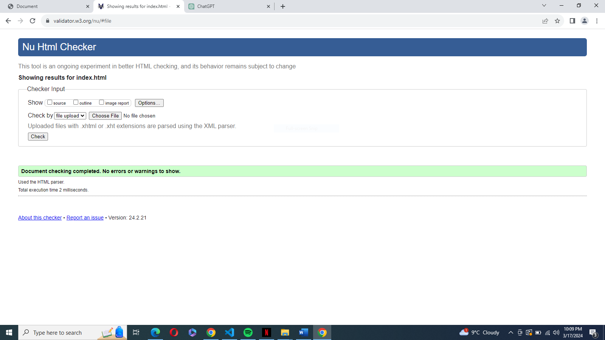

My website report
The Simple CSS and HTML Website is a simple online project that uses HTML and CSS to illustrate fundamental web development concepts. It functions as a platform for introductions, showcasing content in an organized manner and guaranteeing a responsive design for the best possible user experience across multiple platforms. The website has a menu for ease navigation, a hero area with the name "Victor," and a content part with four grid-organized boxes (A, B, C, and D). To improve readability and aesthetic appeal, CSS attributes are used to style each element.Users may easily find and access content on the website because to its visually appealing interface and straightforward navigation. Because of its lightweight design, it can be seen by a wide range of browsers and has quick loading times. However, interactive features and longer content sections might be added in the future to increase user involvement even more. The Basic CSS and HTML Website provides a strong basis for a simple online presence by succinctly demonstrating key web development abilities and design concepts. The website can potentially adapt to changing user needs while being simple and useful with continuous upgrades and enhancements. Upcoming Enhancements: Enhanced Interactivity: To improve user engagement and functionality, include JavaScript in your design to include interactive elements like animations, dynamic content loading, or form validation. Content Expansion: To give users more value and boost SEO, add new parts or pages to the website, such as a blog, services offered, portfolio showcase, or about us page. SEO optimization: To increase visibility and ranking in search engine results, use best practices for search engine optimization (SEO), such as meta tags, meaningful page titles, structured data markup, and pertinent keywords. Integration with Backend: To enable dynamic content generation, user authentication, and database management for scalability and flexibility, integrate backend technologies like PHP, Node.js, or a content management system (CMS) like WordPress.
